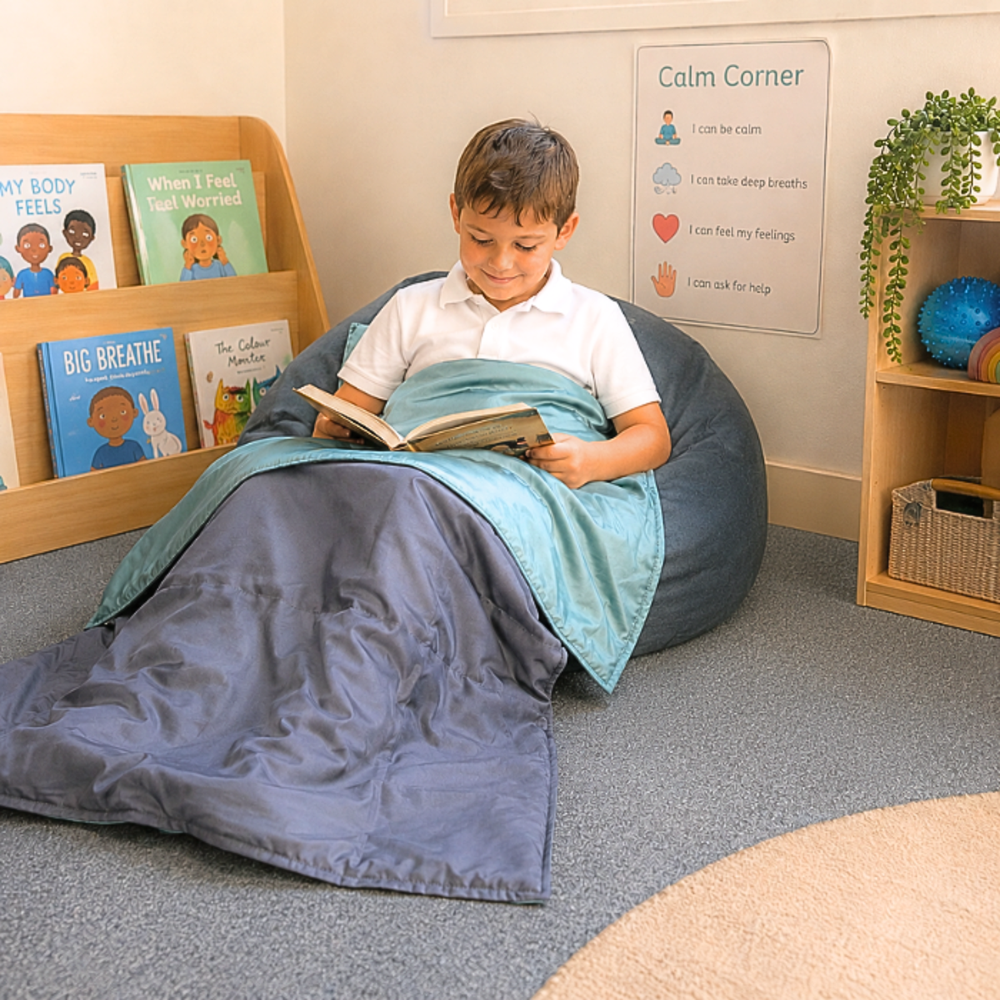

רובוטים חברתיים טיפוליים
פיתוח מיומנויות חברתיות יכול להיות מאתגר עקב הקושי בפענוח מיקרו-הבעות פנים אנושיות. רובוטים חברתיים, כמו Kaspar או Nao, תוכננו במיוחד לספק סביבת תרגול בטוחה ונטולת שיפוטיות. הרובוטים מציגים הבעות פנים ברורות ופשוטות, וחוזרים על תגובות בצורה צפויה ומדויקת, מה שמאפשר לילדים על הרצף לתרגל קשר עין, משחק משותף וזיהוי רגשות בקצב שלהם.

מציאות מדומה (VR) להכנה וחשיפה
סיטואציות יומיומיות רועשות או לא מוכרות, כמו ביקור בסופרמרקט או טיסה, עלולות לגרום לעומס חושי כבד ולחרדה. פלטפורמות מציאות מדומה ייעודיות (כמו Floreo) מאפשרות לאנשים על הרצף לחוות את הסביבות הללו באופן וירטואלי, מבוקר והדרגתי. בעזרת משקפי VR, המשתמשים יכולים ללמוד למה לצפות, להכיר את הגירויים מראש, ולתרגל אסטרטגיות התמודדות עוד לפני היציאה לעולם האמיתי.

ביגוד חכם לטיפול במגע עמוק
וויסות חושי הוא אתגר מרכזי עבור רבים על הרצף. טכנולוגיה לבישה, כמו חולצות ואפודים חכמים, מנצלת את עקרון "הלחץ העמוק" (DPT) להרגעה. פריטים אלו מתהדקים באמצעות שליטה מאפליקציה או חיישנים שמזהים לחץ, וכך מונעים הצפה חושית בזמן אמת.
